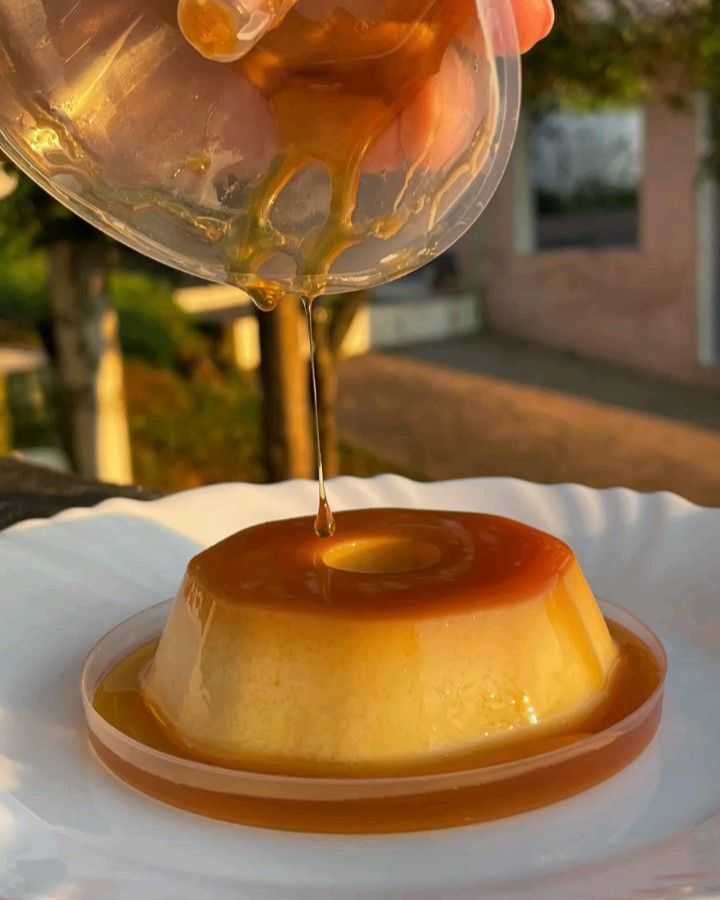
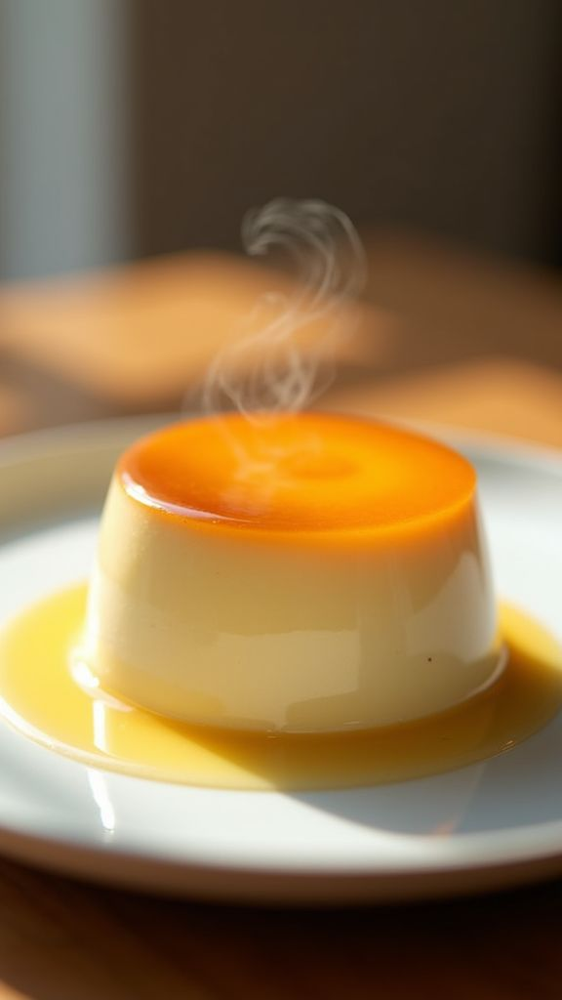
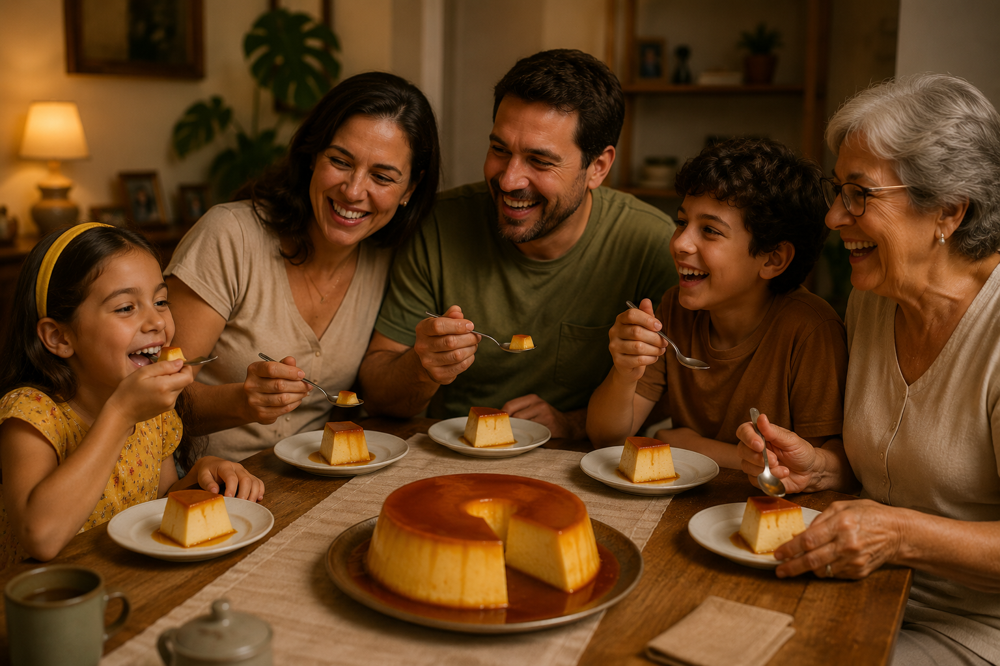

Você Sabia?
Curiosidades do Pudim
Curiosidades que Surpreendem

Uma Sobremesa Antiga
Receitas semelhantes ao pudim existem há séculos, sendo preparadas de diferentes formas em várias partes do mundo.

Receitas que Mudaram
Ao longo do tempo, o pudim ganhou novas versões, ingredientes e formas de preparo, criando diferentes sabores.

O Favorito das Famílias
O pudim se tornou uma sobremesa tradicional em muitos almoços de família, festas e comemorações especiais.
"Uma fatia de pudim é pequena, mas a vontade de comer outra é enorme."